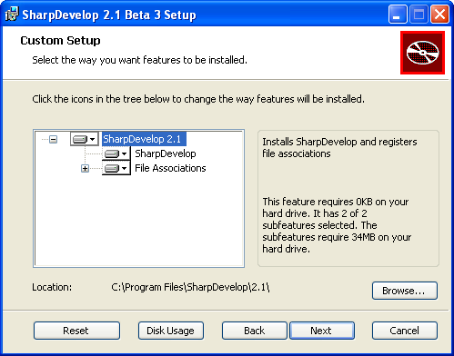
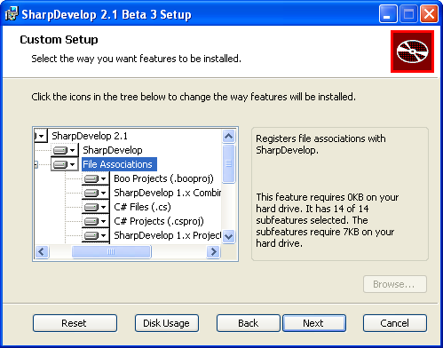
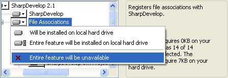
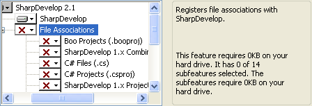

The installer for SharpDevelop 2.1, from revision 2245 onwards, now allows you to configure the file associations that are created. Previously the installer would register them without asking and you would lose any file associations that Visual Studio had previously set up.
When you install SharpDevelop you will now be presented with a dialog containing a feature tree.

Expand the File Associations feature to see the list of file associations that will be created by default.

From this dialog you can stop the installer from registering any file associations or you can disable individual file associations. To stop the installer from registering any associations, right click File Associations and select Entire feature will be unavailable.

Disabled file associations will then be marked with a red cross.

Individual file associations can be selected and disabled in the same way.